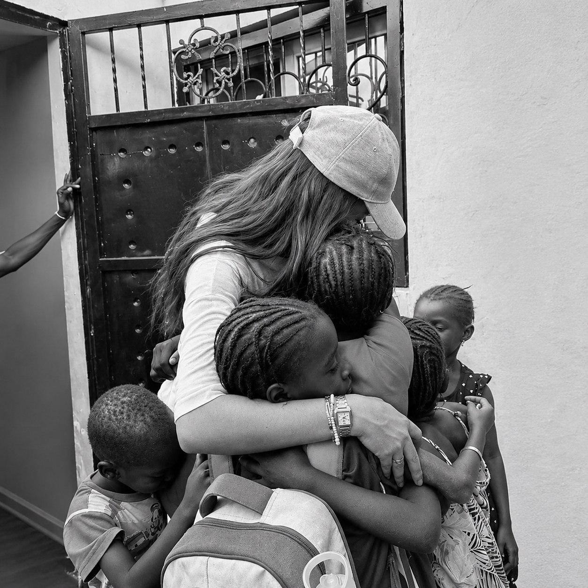
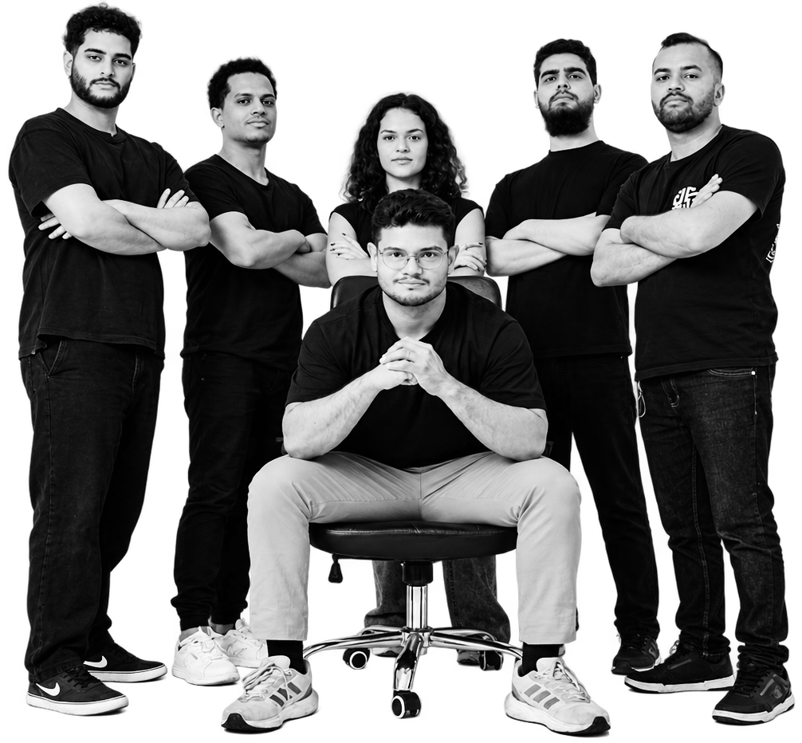

Purpose Made
Practical.
We focus our energy on three interconnected pillars of community welfare: protecting the natural environment, equipping youth with career guidance, and serving warm meals with unconditional dignity.
About our Foundation
At our foundation, we pride ourselves on delivering tailored grassroots solutions that empower families and neighborhoods to thrive. With years of experience across community welfare, our dedicated team is committed to driving growth, environmental protection, and operational excellence.

OUR MISSION
To Nurture, Educate & Sustain.
To spark direct, measurable community upliftment by restoring native urban greenery through Seeds of Hope, guiding underserved youth into meaningful livelihoods through Career Guidance, and ensuring no neighbor goes hungry through respectful meal distributions with Broken Plates.
OUR VISION
A Compassionate Green Society.
We envision thriving, green, and resilient neighborhoods where environmental stewardship is second nature, every young person has equal access to future knowledge and mentors, and every vulnerable citizen is embraced with unconditional dignity and care.
Human First
Respecting every individual and responding to community needs without stigma, prejudice, or condescension.
Living Green
Treating trees, water bodies, and soil as shared community treasures that require consistent ongoing protection.
Informed Choices
Equipping first-generation youth with realistic skills and educational roadmaps so they can build self-reliance.
Accountability
Transparent documentation, ethical volunteer participation, and measurable grassroots delivery on every promise.
Meet Our Team
A dedicated circle of grassroots volunteers, educators, and environmental stewards.
The compassionate driving force behind every Jeevan Foundation initiative!
